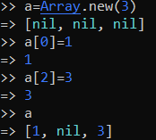
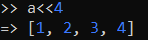
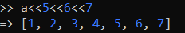
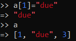
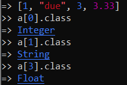
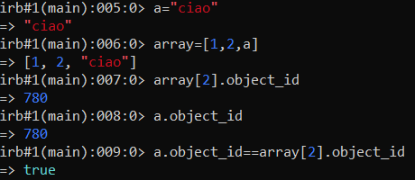

Arrays
A Ruby array is an object that contains other objects which can be accessed using
integer indexes.
Add objects
to the array
 Ruby array can different objects
types(integer,strings,...) and can contain inside it another array
 Variables into arrays: ATTENTIONWe need to take
attention when we are working with variablles into arrays because of the underlying value of an array element is the
reference to the object element
Bibliography:
https://ruby-doc.org/core-3.0.0/Array.html